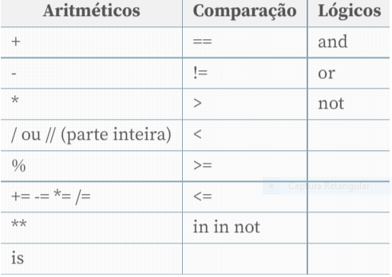

Python
Feito por : Giovana
Capítulo 3
Python é uma linguagem de programação de alto nível, interpretada de script, imperativa, orientada a objetos, funcional, de tipagem dinâmica e forte. Foi lançada por Guido van Rossum em 1991.
![]()
Icone da linguagem Python
Beleza mas onde ele é usado
Alguns dos usos mais comuns da linguagem Python incluem desenvolvimento web, automação, testagem de software, análise de dados, aprendizado de máquina e desenvolvimento de jogos.
“O mercado para programadores(as) Python está cheio de boas oportunidades. Quem avança na carreira pode ter ganhos mensais de aproximadamente R$ 4.000. Já os desenvolvedores Python sênior alcançam rendimentos médios de R$ 7.000 ao mês”, diz o IGTI.
Vamos entender mais de perto o que é esse tão famoso Python
Publicado em 1991, o Python traz características que possibilitam escrever o mesmo requisito em menos linhas de código que o necessário em outras linguagens de programação e hoje, além de adotado na construção de soluções web, também está sendo muito utilizado em aplicações que lidam com processamento de texto, machine learning e recomendação de conteúdo, áreas que não param de crescer. Mas, vamos com calma neste momento, não é mesmo? Primeiro, precisamos saber por onde começar e o que é o Python.
Como você pôde notar, o Python é uma linguagem interpretada e fracamente tipada (não precisamos declarar o tipo de uma variável, por exemplo). Além disso, é uma linguagem de propósito geral. Portanto, pode ser utilizada para solucionar qualquer tipo de problema, o qual pode ser atendido com um sistema desktop, para a web ou mobile.
Tipos de Dados em Python
Uma característica que facilita muito a vida do desenvolvedor são as conversões de tipos em Python. Veja na Listagem 2 alguns exemplos.
- a = float(22/5)
- b = int(4.5)
- c = int(3.9)
- d = int(0xff563)
- e = float(int(3.9))
- f = int(float(3.9))
- g = int(float(3))
- h = round(3.9)
- i = round(3)
- j = int(round(3.9))
- print(a,b,c,d,e,f,g,h,i,j)
Vamos entender melhor cada tipo:
Inteiros
Para a declaração de números inteiros, necessitamos que estes estejam entre -2147483648 a 2147483647. Cada um ocupa quatro bytes na memória e pode armazenar tantos valores decimais (de base 10), quanto valores octais (de base 8) e hexadecimais (base 16). Para declarar um inteiro octal, o número 0 (zero) tem que ser prefixado ao número, como em 0123; e para definir um número hexadecimal, o prefixo 0x ou 0X deve ser utilizado, como 0xFFFFFF ou 0X006699.
a = 42 #decimal b = 010 #octal c = 0xA #hexadecimal
Long
Representa números inteiros longos e pode armazenar números tão grandes quanto a memória puder armazenar. Assim como o tipo int, o long também pode armazenar números tanto decimais, quanto octais e hexadecimais. Para declarar um valor long mesmo se o número a ser atribuído estiver na faixa de valores do tipo int é necessário sufixar a letra L (minúscula ou maiúscula) como em 524511574362l, 0xDDEFBDAEFBDAECBFBAEL e 0122L.
Exemplo: a = 0xDDEFBDAEFBDAECBFBAEL representa: hexadecimal Long
Float
Representa números reais e que possuem sinal de expoente (e ou E). Esses números são comumente chamados de floating-point numbers ou números de ponto flutuante. Por exemplo: 0.0042, .005, 1.14159265 e 6.02e23 (o mesmo que 6.02 x 10²³).
Bool
O tipo bool foi adicionado na versão 2.2 do Python como uma especialização do tipo int. Os valores do tipo bool podem representar dois valores completamente distintos: True (igual ao int 1) e False (igual ao int 0) para, respectivamente, verdadeiro e falso. Exemplo: a = True e b = False.
None Type
NoneType é o tipo de None, uma constante embutida do Python que, assim como True e False, e é frequentemente utilizada para representar a ausência de um valor, similar ao null na linguagem C e derivadas. Exemplo: a = None (o mesmo que null em Java).
String
Para atribuirmos a uma variável uma referência do tipo string, basta que coloquemos entre aspas simples, duplas ou triplas, como mostra a Listagem 4. a = 'Isso é uma String com aspas Simples' b = "Isso é uma String com aspas Duplas" c = """Isso é Uma String com aspas Triplas""" print(a + "\n" + b + "\n" + c)
Operadores
A Tabela resume como são utilizados os operadores na linguagem.
Tabela com valores aritméticos, comparação e lógicos (e/ou/não)
Entrada de Dados no Python
Em Python, a leitura de dados do teclado é feita através das funções raw_input e input, como mostra o exemplo da Listagem 6. Contudo, em versões superiores a 3.0, a função raw_input não funciona. 1 import sys 2 3 nome = input("Digite seu nome: ") 4 idade = input("Digite sua idade: ") 5 print("Digite seu sexo: ") 6 sexo = sys.stdin.readline() 7 8 print("Nome:"+nome + "\n" + "Sexo: %s Idade: %s" %(sexo,idade))
Comandos de Decisão
Para quem já tem contato com alguma linguagem de programação, é possível notar que é muito simples os comandos condicionais de Python:
if CONDIÇÃO : BLOCO DE CÓDIGO elif CONDIÇÃO : BLOCO DE CÓDIGO else : BLOCO DE CÓDIGO IF, ELIF, ELSE no Python Uma observação que deve ser feita é que em Python não usamos as chaves {} para iniciar e finalizar um bloco de instruções. Para que você delimite onde cada bloco começa e acaba, basta identar o código, como mostra a Listagem 7. # coding:utf-8 dedos = int(input("Você tem quantos anos? ")) if dedos == 18: print("Você tem 18 anos") elif dedos > 18: print("Você tem mais de 18 anos") else: print("Você é menor de idade”) Listagem 7. Exemplo básico de como pode ser usado os comandos de decisões: If, Elif e Else
Switch Case
Outra forma de utilizar o if, elif e else, é implementando-o como uma estrutura switch, onde cada elif vai ter um case dentro do switch.
# coding: utf-8 var1 = int(input("Digite um Número para var1")) var2 = int(input("Digite um Número para var2")) if var1 == 1: print("Número var1 igual a 1") elif var1 == 2 or var2 == 3: print("var1 diferente de 1 ou var2 diferente de 2") elif var1 >= 1000 or var2 <= -1000: print("var1 maior que 1000 ou var2 menor que -1000") else: print("nenhuma das alternativas anteriores")
E para caso eu precise repetir uma parte do código mais de uma vez , o que faço ?
Laço de Repetição FOR
No laço de repetição for é implementado em Python e pode ser utilizado de diversas maneiras.
1 #coding: utf-8 2 for fruta in [ "banana", "maca ", "uva" ]: 3 print ("Fruta : " + fruta) 4 print("------------------------------") 5 for i in range (0,10): #(Inclui o Zero, NÃO INCLUI O 10) 6 print ("i = " + str ( i )) 7 print("------------------------------") 8 for i in range(0,10): 9 print ('Não realizado1') 10 if i == 0: 11 break 12 print ('Realizado')
Nesse exemplo, o for da linha 2 armazena três valores para a variável fruta.
No for da linha 5 armazena os valores da sequência range para a variável i e dentro do for da linha 8 demonstra que é possível colocar estruturas de condições.
Laços de repetição WHILE no Python
O laço de repetição while no Python tem basicamente a mesma estrutura do for, porém, como no for ou if, não se utilizam os parênteses para definir a condição e seu bloco de instrução também é definido com a identação.
1 i = 0 2 while i < 10: 3 print ("i = ",i) 4 i += 1 5 6 while True: 7 pass
Função RANGE()
Existe também a função range(), que retorna um array, ou seja, os elementos são representados em uma sequência.
1 print (range(10)) # [0, 1, 2, 3, 4, 5, 6, 7, 8, 9] 2 print (range(5, 10)) # [5, 6, 7, 8, 9] 3 print (range(10, 0)) # [10, 9, 8, 7, 6, 5, 4, 3, 2, 1] 4 i=int(input("Digite um Número")) 5 if i in range(0,10): 6 print("Está Contido") 7 else: 8 print("Não está Contido") Listagem 9. Exemplo utilizando range Nas linhas 1 a 3 é impresso na tela os valores (que estão em comentários), e a partir da linha 4 é verificado se o valor digitado pelo usuário está contido na sequência de 0 a 9.
EXERCÍCIOS EM PYTHON
Aqui estão alguns exemplos de exercícios que você pode fazer para melhorar suas habilidades com o Python:
- Faça um programa que informe a versão do Python que você está utilizando Dicas : - O módulo sys fornece funções e variáveis usadas para manipular diferentes partes do ambiente de tempo de execução do Python; - Pra quem ainda não está familiarizado com a linguagem, um módulo é um arquivo contendo definições e comandos em Python para serem usados em outros programas.
- Faça um programa em linguagem Python que converta metros para centímetros.
- Faça um programa para somar dois valores quaisquer e armazenar em uma variável
- Faça um programa em Python que leia um valor inteiro e mostre a tabuada de 1 a 10 do valor lido.
- Faça um algoritmo em linguagem Python que receba duas notas e calcule a média aritmética e mostre o resultado.
- Escreva um programa que mostre todos os números entre 5 e 100 que são divisíveis por 7, mas não são múltiplos de 5. Os números obtidos devem ser impressos em sequência.
- Faça um programa que receba um número digitado pelo usuário e calcule a soma de todos os números de 1 até ao número digitado. Por exemplo, se o usuário digitou o número 4, a saída deve ser 10 (1+2+3+4=10).
- Faça um programa que recebendo um valor inteiro, informe se o número é positivo, negativo ou neutro.
- Crie um algoritmo que receba um número, conte o número total de dígitos e mostre o resultado. Por exemplo, se o número é 2021 , então a saída deve ser 4
Para um aprofundamento sobre o tema Python coloque seu email abaixo e te contatamos para agendar uma aula experimental.